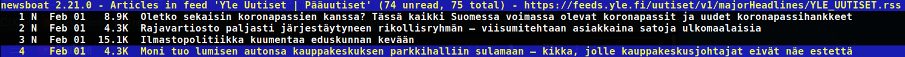
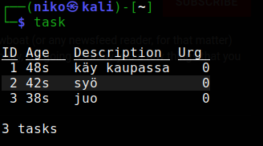
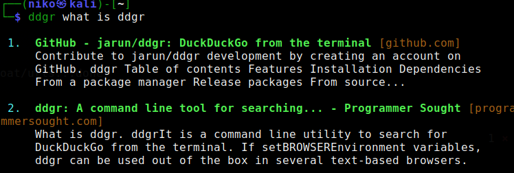

H2(b)
Kaikki asentamani ohjelmat asentui komennolla sudo apt-get install [ohjelma]
Newsboat
Newsboat on avoimen lähdekoodin ohjelma, jolla voi rss syötteitä suoraan terminaalista. Kuvassa esimerkiksi yle.fi uutiset, mutta ohjelmalla voidaan lukea kaikkea keskustelupalstoista youtube -kanaviin
Taskwarrior
Taskwarriorilla voidaan luoda tehtävälistoja terminaalinäkymässä.
ddgr
ddgr on duckduckgo:n hakukone terminaalinäkymään.
